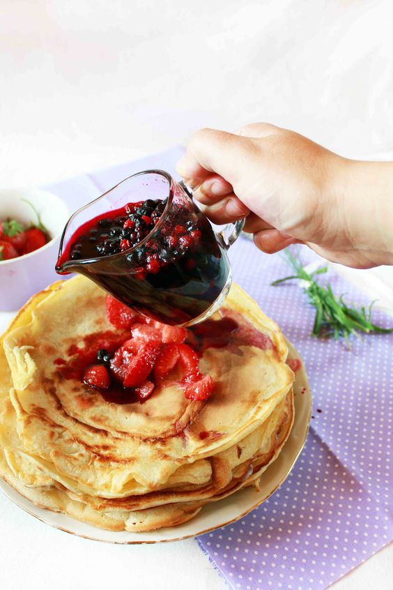

Палачинки
| Продукти | Снимка |
|---|---|
|
 |
| Начин на приготване: | Време за приготвяне: |
|
Първо трябва да разбиете яйцата и захарта с миксер. Към разбитата смес добавете млякото, а след това малко по малко и брашното. За да не станат вашите палачинки на бучки, пресейте брашното. Накрая добавяте солта и отново разбърквате добре. За печенето на палачинки е най-добре да имате специален плосък тиган. Специалното на този тиган е това, че в него палачинките се обръщат много по-лесно, а и сместа се разпределя по-равномерно. Ако нямате тиган за палачинки ползвайте вашия малък класически тиган.Загрейте го и го намажете с бучка масло. Намажете обилно със сладко и се отдайте на божествения вкус! |
Времетраене: 15 мин |